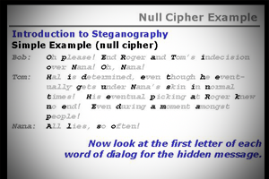

Probablemente, uno de los ejemplos más antiguos del uso de la 'esteganografía' sea el referido por Heródoto en "Las historias". En este libro, describe cómo un personaje tomó un cuadernillo de dos tablillas de madera, rayó la cera que las cubría y en la madera misma grabó un mensaje. Tras esto, volvió a cubrir con cera las tablillas. Otra historia, en el mismo libro, relata cómo otro personaje había rasurado a navaja la cabeza de su esclavo de mayor confianza. Le tatuó el mensaje en el cuero cabelludo, esperó después a que le volviera a crecer el cabello, y lo mandó al receptor del mensaje con instrucciones de que le rasuraran la cabeza.
El científico italiano Giovanni Battista della Porta descubrió cómo esconder un mensaje dentro de un huevo cocido. El método consistía en preparar una tinta mezclando una onza de alumbre y una pinta de vinagre, y luego se escribía en la cáscara. La solución penetra en la cáscara porosa y deja un mensaje en la superficie de la albúmina del huevo duro, que solo se puede leer si se pela el huevo.
El origen del vocablo "esteganografía" se remonta a principios del siglo XVI. El abad alemán Johannes Trithemius escribió un libro al que tituló "Steganographia". En él se trataban temas referentes a la encriptación de mensajes, así como métodos para conjurar a los espíritus. El libro en cuestión se considera hoy en día un libro "maldito" y es muy apreciado por los esoteristas. Aparte de este título, también publicó "Polygraphiae Libri Sex", un compendio de seis tomos sobre criptografía que no participaba de los elementos esotéricos de su libro anterior.
» En "Sueño de Polífilo" (Hypnerotomachia Poliphili, ed. Aldus Manutius), escrito por Francesco Colonna en 1499, se puede obtener la frase "Poliam frater Franciscus Columna peramavit" ("El hermano Francesco Colonna amó apasionadamente a Polia") si se toma la primera letra de los treinta y ocho capítulos.
» Gaspar Schott (1665): "Schola steganographica".
» Ian Caldwell, Dustin Thomason (2004): "Enigma del cuatro".
» Lev Grossman (2004): "El códice secreto".
Durante la segunda guerra mundial, se usaron los "microfilmes" en los puntos de las íes o en los signos de puntuación para enviar mensajes. Los prisioneros usaban i, j, t y f para ocultar mensajes en código morse. Pero uno de los sistemas más ingeniosos se conoce con el nombre de "Null Cipher". Consiste en enviar un mensaje, lo más común posible, y elegir cierta parte de él para ocultar el mensaje real. Un ejemplo es el texto siguiente:
"Apparently neutral's protest is thoroughly discounted and ignored. Isman hard hit. Blockade issue affects pretext for embargo on by products, ejecting suets and vegetable oils" . ("Al parecer la protesta neutral es completamente descontada e ignorada. Isman afectados. Problema de bloqueo afecta pretexto de embargo sobre los productos, consigue expulsar sebo y aceites vegetales").
Si tomamos la segunda letra de cada palabra, aparece el mensaje "Pershing sails from NYr June i" . ("Pershing zarpa desde Nueva York el 1 de junio.")
No está claro desde qué época se comenzaron a utilizar, pero sin duda se han usado a lo largo de la historia y hasta la actualidad. Se pueden clasificar en dos categorías: » Básicas: sustancias con alto contenido en carbono: leche, orina, zumo de limón, jugo de naranja, jugo de manzana, jugo de cebolla, solución azucarada, miel diluida, coca cola diluida, vino, vinagre, etc. Básicamente, sin importar cuál de las “tintas” mencionadas se utilice, el mensaje quedará invisible, y al calentar la superficie donde se escribió, el carbono reaccionará, y aparecerá el mensaje en un tono marrón. » Más sofisticadas: aparecen tras una reacción química, o tras ser expuestas a la luz de cierta longitud de onda (IR, UV y otras).
Lo que la esteganografía hace es explotar las limitaciones de la percepción humana, ya que nuestros sentidos - vista y oído - tienen límites para percibir información extraña intercalada en su contenido. Sin embargo, existen softwares disponibles que pueden hacer ese trabajo de detección por diversas técnicas analíticas. Al estudio y aplicación de ellas se lo denomina "estegoanálisis". Mientras que con la esteganografía se intenta estudiar e implementar métodos para enviar mensajes encubiertos en portadores de apariencia inocua, con el estegoanálisis se estudian las formas de detectar la presencia de mensajes ocultos en potenciales portadores.
Debido a que la esteganografía es invasiva, es decir, deja huellas en el medio de transporte utilizado; las técnicas de estegoanálisis intentan detectar estos cambios, usando incluso complejos mecanismos estadísticos. Las técnicas de estegoanálisis, hasta el momento, sólo llegan a brindar un cierto nivel de probabilidad de existencia de un mensaje encubierto en un supuesto objeto portador.